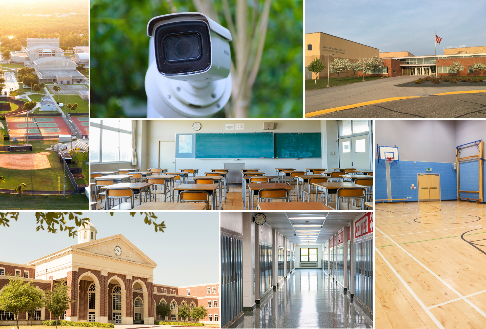

Vision AI로 캠퍼스 안전을 실현합니다 Campus Safety with Vision AI
기존 카메라를 실시간 안전 시스템으로 전환합니다. AI 기반 위협 감지로 사건 발생 전 선제적으로 대응하여 학생과 교직원을 보호합니다. Turn your existing cameras into real-time safety systems. AI-powered threat detection prevents incidents before they happen to protect students and staff.

핵심 기능 및 효과 Key Features & Benefits
사건 예방 Prevent Incidents Before They Happen
가시적 무기, 블랙리스트 차량 번호판, 미인가 인원을 출입구 근처에서 즉시 감지합니다. Instantly detect visible weapons, flagged license plates, or unauthorized individuals near entrances.
학생 및 교직원 보호 Protect Students and Staff
미인가 픽업·배회·방과 후 시설 접근을 모니터링하고 실시간 알림을 전송합니다. Monitor for unauthorized pickups, loitering, and after-hours property access with real-time alerts.
출입 통제 연동 Access Control Integration
출입통제 시스템과 연동하여 Vaidio 커스텀 알림 기반으로 시설 및 지정 구역을 보호합니다. Integrates with access control systems to secure facilities and designated areas based on customizable alerts.
보안 인력 부담 경감 Reduce Security Staff Burden
캠퍼스 전반에 걸친 위협 감지와 사건 추적을 자동화하여 보안 인력의 업무 부담을 줄입니다. Automate threat detection and incident tracking across campuses to reduce security staff workload.
광역 배포 용이 Scale Across the District
학생 정보 시스템 및 출입통제 플랫폼과 쉽게 연동되며 구역·사이트별 배포가 가능합니다. Easily integrates with student information systems and access control platforms, deployable by camera or site.
주요 과제와 Vaidio 솔루션 Key Challenges & Vaidio Solutions
총기 또는 흉기 소지 의심자를 신속히 파악하고 대응하기 어렵습니다. Quickly identifying and responding to suspected individuals carrying firearms or weapons is difficult.
AI가 가시적 무기를 실시간 감지하고 보안팀 및 관리자의 모바일 기기에 즉시 알림을 전송합니다. AI detects visible weapons in real time and sends immediate alerts to security teams and administrators' mobile devices.
미인가 방문객이나 알려진 위협 인물이 출입구를 통해 시설에 접근할 수 있습니다. Unauthorized visitors or known threats may gain access to facilities through entry points.
출입구에서 방문객 ID를 검증하고 위협 인물 및 미인가 접근을 실시간 알림으로 즉시 감지합니다. Verify visitor IDs at access points and instantly detect threats and unauthorized access with real-time alerts.
방과 후 침입, 기물 파손, 시설 오남용을 감시할 인력이 부족합니다. Insufficient staff to monitor after-hours intrusions, vandalism, or misuse of school property.
주요 위치에서 장면 변화·움직임·침입 감지 시 즉시 알림을 전송하여 원격 감시를 가능하게 합니다. Push alerts for scene changes, motion, or intrusion after hours at critical locations, enabling remote oversight.
Vaidio를 선택하는 이유 Why Choose Vaidio
30+ 정확한 AI 엔진 30+ Accurate AI Engines
10년 이상 3,000여 개 객체로 훈련된 가장 정확한 AI 분석 엔진입니다. The most accurate AI—30+ engines trained over 10+ years on 3,000+ objects.
하드웨어 독립성 No Hardware Lock-In
모든 주요 VMS 및 기존 카메라 인프라와 호환되어 교체 비용이 없습니다. Works with all major VMSs and existing camera infrastructure—no replacement required.
실시간 + 검색 가능 Real-Time + Searchable
즉각적인 알림과 Sub-2초 포렌식 영상 검색으로 조사 효율을 극대화합니다. Instant alerts plus sub-2-second forensic video search for maximum investigation efficiency.
미래 지향적 확장성 Future-Proof Scalability
플로팅 라이선스와 워크로드 최적화로 학교·구 전체에 유연하게 확장 가능합니다. Floating licenses and workload optimization enable flexible scaling across schools and districts.
교육 캠퍼스 AI 영상분석 도입을 검토 중이신가요? Ready to Transform Your Education Campus Operations?
퓨텍솔루션즈 전문가와 함께 귀사 환경에 최적화된 Vaidio 솔루션을 검토해 보세요. Work with Futec Solutions specialists to explore the optimal Vaidio solution for your environment.